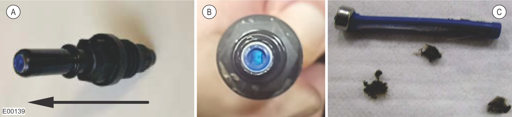

Intermittent Fault Process (UDSTs Passed)
Visually check the DEF tank components for damage and contamination. If any damage or contamination is found, clean or replace the affected component.
Notice
When removing the DEF tank strainers and filters, make sure that no dirt or contamination enters the DEF tank through the open ports. Contamination will cause damage to the aftertreatment system.
Make sure that the DEF tank vent line filter is in place and is clear of any dirt, debris, or DEF crystallization.
Make sure that the DEF tank vent line is not kinked and is clear of any dirt, debris, or DEF crystallization.
Make sure that the DEF sending unit pickup strainer is clear of any dirt, debris, or DEF crystallization. Make sure that there is a gap between the DEF sending unit pickup strainer and the pickup tube. The strainer should not be pressed up against the pickup tube.
Make sure that the DEF tank fill strainer is securely installed and is clear of any dirt, debris, or DEF crystallization.
Note
If the DEF tank fill strainer is missing, damaged, or contaminated, remove and clean the DEF tank. After the DEF tank is clean, clean or replace the DEF tank fill strainer.
Disassemble and inspect the in-line DEF strainer (if equipped) to make sure that it is clear of any dirt, debris, or DEF crystallization.
Check the DEF supply module components for damage and contamination. If any damage or contamination is found, clean or replace the affected component.
Notice
When removing the supply module fittings, make sure that no dirt or contamination enters the supply module through the open ports. Contamination will cause damage to the aftertreatment system.
Remove and inspect the inlet port fitting.

A
Direction of Air Flow Through the Inlet Fitting
B
Blue Strainer Visible When Light is Shone Through the Bottom of the Inlet Fitting
C
Examples of Inlet Fitting Contamination
Blow air through the fitting. If air does not pass through, there is contamination in the fitting and the fitting must be replaced.
Shine a flashlight through the bottom of the fitting. If the blue base of the strainer is not visible, there is contamination in the fitting and the fitting must be replaced.
Remove the main DEF supply module filter and replace with a new filter. The rubber plug included with the new filter must be installed or the DEF supply module will not develop any pressure. Inspect the removed filter for debris and contamination.
Disconnect all DEF lines from the DEF supply module and inspect for visible leaks, damage, or kinks. Blow air through each line to clear any debris.
If any of the fittings, screens, or main filter are contaminated with debris, remove and clean the DEF tank. Check the DEF supply source for contamination. Verify that the DEF is being handled and stored as per the recommendations in the machine's Operator's Manual.
Clean the DEF tank.
Replace the DEF supply module.
Only replace the DEF supply module after the entire DEF system has been checked for contamination and cleaned as per the troubleshooting steps in this procedure.
If contamination has been found during troubleshooting, the DEF supply module has potentially been damaged from the contamination and replacing the DEF supply module is recommended.
If no contamination or leaks have been found during troubleshooting, the DEF supply module may be the cause of the fault and should be replaced.
Check if the fault is still active.
Perform 3 consecutive UDSTs.
If the DEF supply module passes 3 consecutive UDSTs, use the PT-Box tool or LogOn to perform the Inducement Unlock/Counter Reset procedure.
Have the operator operate the machine under full load for 1 hour. Use the PT-Box tool, if available, to record the DEF Duty Cycle and DEF Pressure parameters for 30 minutes while the machine is under load. Refer to Supply Module Duty Cycle and Pressure Test for the procedure.
Use the PT-Box tool or LogOn to verify that the fault has been resolved.
If no fault codes return after operating, return the machine to service.
If fault codes return after operating, repeat the troubleshooting procedure.
If the DEF supply module fails 1 or more UDSTs after contamination was found in the system, perform the Elimination Process (UDSTs Failed) procedure to identify the cause of the fault.
If the DEF supply module fails 1 or more UDSTs after no contamination was found in the system, contact the Tigercat Industries Service Department for more help.
Please have the following information ready:
Machine serial number
Machine hours
IQAN clone
FPT fault codes and stored data from the PT-Box or LogOn
Copy of the test results from all UDSTs performed during this troubleshooting procedure.